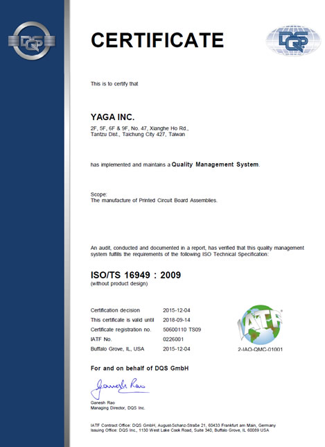

<script src="header.js"></script>

<main class="news-d">

<div class="inner">

	<div class="news-d-t">
		<div class="news-d-n">Yaga Inc. to receive ISO/TS 16949:2009 Automotive Sector QA certification.</div>
		<div class="news-d-d">2015-12-04<span class="publisher"><i class="fas fa-pen-nib"></i>Chen Chih-Chuan</span></div>


	</div>
	<div class="news-d-i">
		<p>
			Yaga Inc. announced that the company has been accredited to DQS Taiwan Inc.'s ISO/TS 16949 Automotive Sector QA qualifications for car grade PCBA manufacturing services. According to Yaga Inc., it was the result of participation and effort from all employees that the company's key processes were able to pass the stringent requirements for the certification, which would in turn boost the company's customer service capabilities and further secure its share in the car grade product market.

			<br><br>
			“As a key member of Gigatek Inc., Yaga Inc. has always taken its commitment to delivering quality products to customers and motto of “Customer First” very seriously,” noted Gitatek Inc. Senior Executive Vice President Huang Chen-Yu. “And its accreditation to TS16949 is an apt testament to the fulfillment of that company policy. The TS16949 system poses stringent requirements on processes, operations and performance. Through this accreditation, Yaga Inc.has proven the team's capability to deliver superior services to customers as a reliable partner for long-term collaboration.” 
		</p>
			<div class="title">About ISO/TS 16949:2009</div>			
			ISO/TS 16949 is an international quality management system standard for the global automotive industry. It sets clear definitions for various regulations governing R&D, manufacturing, installation and maintenance. It functions as a quality system standard that defines ways for supply chains to achieve continual improvement, enforce defect prevention, reduce deviation and waste. For more information on ISO/TS 16949:2009, please visit:<a href="http://www.iatfglobaloversight.org/content.aspx?page=AbouttheISO/TS" target="_blank">http://www.iatfglobaloversight.org/content.aspx?page=AbouttheISO/TS</a>
		</p>
		<a class="venobox" href="public/SRC/images/news/16949.jpg"></a>
	</div>
	<a href="news.php" class="btn">Back</a>

</div>

</main>

<nav class="bread">

	<div class="inner">

		<a href="index.php">Home</a><span class="bread-space">/</span><a href="news.php">NEWS</a>
	</div>


</nav>

<script src="footer.js"></script>